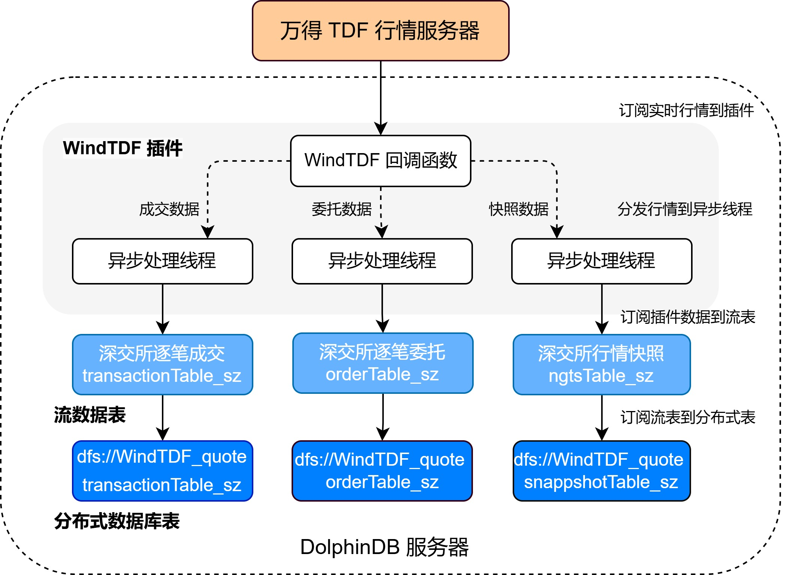

WindTDF 行情插件最佳实践指南
万得宏汇行情系统为各类证券投资机构提供多市场整合的实时行情，通过统一的数据接口标准，提供低延时以及高质量的行情数据服务。DolphinDB 提供了基于万得宏汇行情系统 TD 获取高频行情数据的 WindTDF 插件，帮助用户方便地通过 DolphinDB 脚本语言将实时行情数据接入 DolphinDB 中，以便进行后续的计算或存储。
本文主要介绍如何通过 WindTDF 插件将实时行情数据接入流表、写入分布式数据库。本文全部代码需要运行在 2.00.11 或者更高版本的 DolphinDB Server 以及插件上。目前 WindTDF 插件仅支持在 Linux 版本 server 上运行。
1. WindTDF 插件基本使用
WindTDF 插件基于万得宏汇提供的行情数据服务 TDF_C++ SDK 实现。其最核心的功能是实现了行情回调函数，每次接收到行情时会写入订阅时所指定的 DolphinDB 共享流表中。DolphinDB WindTDF 插件目前已经支持了包括上交所、深交所、中金所的股票基金快照、逐笔、期货等数据类型，具体订阅方式见下文。WindTDF 插件的接口见 DolphinDB WindTDF Plugin 使用说明。
1.1 安装插件
节点启动后，连接节点并在 GUI（或 VS Code、Web UI）等 DolphinDB 客户端中执行 installPlugin 函数，可以下载到与当前 server
版本适配的 WindTDF 插件文件。
login("admin", "123456")
installPlugin("WindTDF")1.2 加载插件
在脚本中调用插件相关的接口前，需要先加载插件。在 GUI（或 VS Code、Web UI）等客户端中执行
loadPlugin("WindTDF") 加载插件。
loadPlugin("WindTDF")loadPlugin 函数正常返回则插件加载成功，以 VS Code 为例，首次加载成功后返回的部分信息如下，返回值内容是
WindTDF 插件所提供的函数：
2. 行情的接入与存储
本章以订阅沪深两市的全市场股票快照和逐笔数据、实时写入 DolphinDB 分布式数据库为例，对 WindTDF 插件的使用进行说明。
2.1 数据接入方案
数据接入的方案如下：
- 通过 WindTDF 插件订阅上海深圳市场的快照、逐笔委托、逐笔成交数据，写入 DolphinDB 的持久化流数据表。
- 订阅持久化流数据表写入 DolphinDB 分布式数据库，将数据存储到磁盘上。
注意：请勿使用 WindTDF 插件将行情数据直接写入分布式数据库。因为分布式数据库并不适用于此类高频的流式写入。建议在使用时，借助流数据表及其发布订阅功能以实现批量写入分布式表。这样既可以提高写入的吞吐量，也有助于降低时延。
下面分步骤介绍关键 DolphinDB 代码实现，完整脚本见附录 1。
2.2 数据接入方案实施步骤
本节介绍了如何在 DolphinDB 中建立数据接入所需要的表，实施 WindTDF 订阅和连接。
2.2.1 流表和分布式表的创建
为保证后续用于持久化的 enableTableShareAndPersistence
函数能够正常执行，需要节点启动之前在配置文件中（单节点：dolphindb.cfg，集群：cluster.cfg）指定配置参数
persistenceDir ，配置参考功能配置。
创建连接 handle
由于万得 TD 系统在连接行情系统后无法修改订阅，因此在连接前需要预先设置所有数据的订阅。WindTDF 插件的基本使用流程为：创建 handle、进行数据订阅、连接。这里先创建连接 handle，再进行后续的操作。
handle = WindTDF::createHandle([HOST], [PORT], [USERNAME], [PASSWORD])获取表结构
调用 WindTDF::getSchema 方法可以获取行情数据各个表的表结构。运行以下代码可以获取快照、逐笔委托、逐笔成交三种表结构。注意，万得 TD 系统已经将数据进行了初步的处理和对齐，因此 WindTDF 插件不同市场的同种类型的数据表结构相同，比如上海市场的快照结构与深圳市场相同。
snapshotSchema = WindTDF::getSchema(`snapshot);
orderSchema = WindTDF::getSchema(`order);
tradeSchema = WindTDF::getSchema(`trade);创建持久化流数据表
通过插件得到行情数据的表结构后，使用该表结构创建三种数据品类的持久化流数据表。
cacheSize = 1000000
snapshot_sh = streamTable(10000:0, snapshotSchema[`name], snapshotSchema[`typeString]);
enableTableShareAndPersistence(table=snapshot_sh,tableName=`snapshot_sh_s,cacheSize=cacheSize, preCache=cacheSize)
snapshot_sz = streamTable(10000:0, snapshotSchema[`name], snapshotSchema[`typeString]);
enableTableShareAndPersistence(table=snapshot_sz,tableName=`snapshot_sz_s,cacheSize=cacheSize, preCache=cacheSize)
order_sh = streamTable(10000:0, orderSchema[`name], orderSchema[`typeString]);
enableTableShareAndPersistence(table=order_sh,tableName=`order_sh_s,cacheSize=cacheSize, preCache=cacheSize)
order_sz = streamTable(10000:0, orderSchema[`name], orderSchema[`typeString]);
enableTableShareAndPersistence(table=order_sz,tableName=`order_sz_s,cacheSize=cacheSize, preCache=cacheSize)
trade_sh = streamTable(10000:0, tradeSchema[`name], tradeSchema[`typeString]);
enableTableShareAndPersistence(table=trade_sh,tableName=`trade_sh_s,cacheSize=cacheSize, preCache=cacheSize)
trade_sz = streamTable(10000:0, tradeSchema[`name], tradeSchema[`typeString]);
enableTableShareAndPersistence(table=trade_sz,tableName=`trade_sz_s,cacheSize=cacheSize, preCache=cacheSize)代码第一行的 cacheSize
变量控制了在建表时预分配内存的大小、以及流数据表可占用的最大内存，其单位是行，设置较大的 cacheSize
可以降低出现峰值时延的频率。cacheSize 的具体大小可以根据实际的可使用的内存大小决定。具体优化原理可参考 DolphinDB
流计算时延统计与性能优化。
创建分布式数据库
为将行情数据存入分布式数据库，需要根据之前得到的行情数据表结构来创建分布式库表，分区规则参考自基于 DolphinDB 存储金融数据的分区方案最佳实践，使用按天分区 + 按股票代码 HASH25 分区的方式。
dbName = "dfs://WindTDF_quote"
shTransactionTbName = "transactionTable_sh"
shOrderTbName = "orderTable_sh"
shSnapshotTbName = "snapshotTable_sh"
szTransactionTbName = "transactionTable_sz"
szOrderTbName = "orderTable_sz"
szSnapshotTbName = "snapshotTable_sz"
dbDate = database(, partitionType=VALUE, partitionScheme=2024.01.01..2025.01.01)
dbID = database(, partitionType=HASH, partitionScheme=[SYMBOL, 25])
db = database(directory=dbName, partitionType=COMPO, partitionScheme=[dbDate, dbID],engine='TSDB',atomic='CHUNK')
tbSchema = table(1:0, snapshotSchema.name, snapshotSchema.typeInt)
db.createPartitionedTable(table=tbSchema,tableName=shSnapshotTbName,partitionColumns=`nActionDay`szWindCode,sortColumns=`szWindCode`nTime)
shSnapshot = loadTable(db, shSnapshotTbName)
db.createPartitionedTable(table=tbSchema,tableName=szSnapshotTbName,partitionColumns=`nActionDay`szWindCode,sortColumns=`szWindCode`nTime)
szSnapshot = loadTable(db, szSnapshotTbName)
tbSchema = table(1:0, orderSchema.name, orderSchema.typeInt)
db.createPartitionedTable(table=tbSchema,tableName=shOrderTbName,partitionColumns=`nActionDay`szWindCode,sortColumns=`szWindCode`nTime)
shOrder = loadTable(db, shOrderTbName)
db.createPartitionedTable(table=tbSchema,tableName=szOrderTbName,partitionColumns=`nActionDay`szWindCode,sortColumns=`szWindCode`nTime)
szOrder = loadTable(db, szOrderTbName)
tbSchema = table(1:0, tradeSchema.name, tradeSchema.typeInt)
db.createPartitionedTable(table=tbSchema,tableName=shTransactionTbName,partitionColumns=`nActionDay`szWindCode,sortColumns=`szWindCode`nTime)
shTrade = loadTable(db, shTransactionTbName)
db.createPartitionedTable(table=tbSchema,tableName=szTransactionTbName,partitionColumns=`nActionDay`szWindCode,sortColumns=`szWindCode`nTime)
szTrade = loadTable(db, szTransactionTbName)2.2.2 订阅 WindTDF 行情
订阅行情数据到流数据表
使用 WindTDF::subscribe 函数进行 WindTDF 行情订阅。
WindTDF::subscribe(handle, snapshot_sh_s, "SH-2-0", "snapshot");
WindTDF::subscribe(handle, snapshot_sz_s, "SZ-2-0", "snapshot");
WindTDF::subscribe(handle, order_sh_s, "SH-2-0", "order");
WindTDF::subscribe(handle, order_sz_s, "SZ-2-0", "order");
WindTDF::subscribe(handle, trade_sh_s, "SH-2-0", "trade");
WindTDF::subscribe(handle, trade_sz_s, "SZ-2-0", "trade");有关 WindTDF 插件对数据品类的支持情况和相关订阅参数，参考附录。
订阅流表写入分布式库
订阅 2.2.1 节中的三个持久化流数据表，将增量数据实时写入分布式数据库。
def handleInsert(tb, mutable msg) {
tableInsert(tb, msg)
}
subscribeTable(tableName="snapshot_sh_s", actionName="snapshotTableInsert_sh", offset=-1, handler=handleInsert{shSnapshot}, msgAsTable=true, batchSize=20000, throttle=1, reconnect=true)
subscribeTable(tableName="snapshot_sz_s", actionName="snapshotTableInsert_sz", offset=-1, handler=handleInsert{szSnapshot}, msgAsTable=true, batchSize=20000, throttle=1, reconnect=true)
subscribeTable(tableName="order_sh_s", actionName="orderTableInsert_sh", offset=-1, handler=handleInsert{shOrder}, msgAsTable=true, batchSize=20000, throttle=1, reconnect=true)
subscribeTable(tableName="order_sz_s", actionName="orderTableInsert_sz", offset=-1, handler=handleInsert{szOrder}, msgAsTable=true, batchSize=20000, throttle=1, reconnect=true)
subscribeTable(tableName="trade_sh_s", actionName="tradeTableInsert_sh", offset=-1, handler=handleInsert{shTrade}, msgAsTable=true, batchSize=20000, throttle=1, reconnect=true)
subscribeTable(tableName="trade_sz_s", actionName="tradeTableInsert_sz", offset=-1, handler=handleInsert{szTrade}, msgAsTable=true, batchSize=20000, throttle=1, reconnect=true)handleInsert自定义函数会往将数据写入分布式数据库。- 通过调整 subscribeTable
函数中的 batchSize 和 throttle
参数可以控制写入分布式数据库的频率，达到其中一个设置的条件，才会向分布式数据库写入一次。
- batchSize=20000 表示当未处理消息的数量达到 20000 时，handler 才会处理消息。
- throttle=1 表示继上次 handler 处理消息之后，若未处理消息的数量还没有达到 20000 ，但是时间间隔 1s 后也会处理消息。
启动 WindTDF 连接，开启数据写入
在订阅后，使用函数 WindTDF::connect 连接 WindTDF，行情数据将进入流数据表。
WindTDF::connect(handle)2.3 WindTDF 运行状态监控
运行过程中，可以使用 WindTDF::getStatus 查询 WindTDF 行情的接收情况。
WindTDF::getStatus()查询流表的订阅，可以看到发布订阅都正常进行。
getStreamingStat().subWorkers查询分布式表中某一只股票的数据。这里查询 110070 这只上交所股票的数据，执行以下命令，从 dfs 表中获取了连接后收到的所有该股票的逐笔数据。
select * from loadTable("dfs://WindTDF_quote", "snapshotTable_sh") where szWindCode=`110070.SH
至此，已经成功订阅上交所和深交所的快照和逐笔数据，并将它落盘到 DolphinDB 分布式表中。
3. 常见问题
- 插件是否支持断线重连
订阅数据时，如果网络波动或者 Wind 行情端服务器本身不稳定会导致插件连接断开。WindTDF 插件内置断线重连机制，这一功能由 TDF SDK 提供保障，对插件本身透明。通过在日志中筛选以 [PLUGIN::WINDTDF] 开头的记录，并关注其中包含 "connect" 和 "disconnect" 的条目，可以详细了解断线重连的具体情况。插件成功重连后，SDK 不会重传数据，因此在断连期间的数据将会丢失。
- 如何避免因为阻塞丢失数据
在插件接收数据时，为确保及时处理，建议使用异步持久化的流表，并预设初始容量（如 100 万条），以避免扩容影响写入速度，进而导致 SDK 端的行情缓存因满载而导致数据丢失。
- 如何使用插件 replay 功能重放数据
由于 WindTDF 提供的是实时数据流，一旦网络出现波动导致数据丢包，系统无法实时重传以确保数据的完整性。因此，如果因为特殊原因发生数据丢失，需联系行情提供商获取当天的完整数据，或在交易日结束后利用插件 connect 函数的 replay 功能（connect），回放当天所有的数据以进行补救。注意只能在 15 点收盘后进行回放，收盘前指定回放为 true 进行连接时会报错。
这里以回放上交所股票快照为例进行说明：// 订阅上交所的股票快照，准备工作与普通订阅相同 handle = WindTDF::createHandle(HOST, PORT, USERNAME, PASSWORD, dict(["outputRecvTime", "outputElapsed"], [true, true])); schema = WindTDF::getSchema(`snapshot); snapshot_sh_s = streamTable(100000:0, schema[`name], schema[`typeString]); enableTableShareAndPersistence(table=snapshot_sh_s,tableName=`snapshot_sh_s1,cacheSize=cacheSize, preCache=cacheSize) WindTDF::subscribe(handle, snapshot_sh_s1, "SH-2-0", "snapshot"); // 建立连接，第二个参数指定为 true，即回放数据 WindTDF::connect(handle, true) - 如何处理内存耗尽（OOM）
由于插件中使用了第三方 SDK，如果系统遭遇内存耗尽（OOM），可能会导致性能急剧下降和不可预测的异常行为。如果接收数据的流表长时间无数据，并且日志中出现以 [PLUGIN::WINDTDF] 开头的 'out of memory' 或 'bad alloc' 信息，说明可能发生了 OOM。
OOM 会导致数据写入失败，进而影响后续计算。因此，需尽量避免 OOM，以下是一些建议：
- 合理分配流数据的容量（capacity），并降低用于接收行情数据的流表的 cacheSize ，避免太多的数据被留存在内存中。
- 在接收行情数据的节点上，如果同时需要处理大规模数据或者执行复杂查询，需要特别注意内存的使用情况。
- 及时管理 session 的变量，可以通过 undef 函数将不需要的临时变量及时释放。
- 是否可以跨天连接
WindTDF 具备跨天连接的能力，前一日收盘前建立的连接在次日开盘后仍能保持，并继续接收数据。
附录
- 订阅落库的脚本文件
- WindTDF 插件数据品类参数表
WindTDF 插件目前支持了下表中出现的数据品类。在订阅时可以查询该表，找到想要订阅的数据入参。表中为空的项，对应字段在订阅时填空即可。
行情源 行情数据类型 SH-2-0（上交所 Level-2） snapshot（快照）， trade（成交），order（委托），orderTrade（合成逐笔） SZ-2-0（深交所 Level-2） snapshot（快照）， trade（成交），order（委托），orderTrade（合成逐笔） SI-1-0（申万一级行业指数） index（指数） SH-1-1（上交所 Level-2 期权） futures（期货），options（期权） SZ-1-1（深交所 Level-2 期权） futures（期货），options（期权） CF-2-0（中金所 Level-2） futures（期货），options（期权）